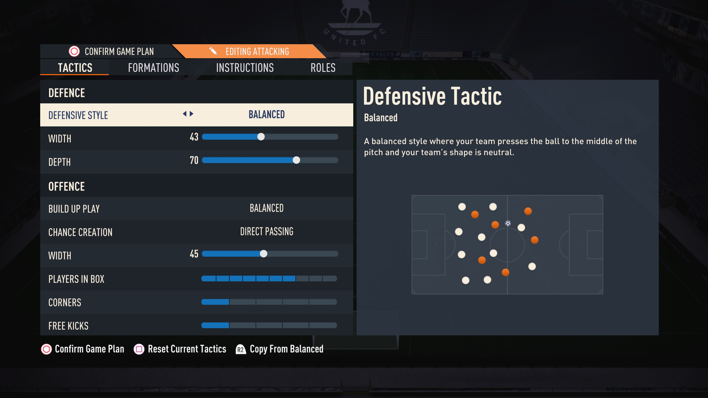

Throughout seasons, the team's tactics have undergone a number of changes. At first, 4-2-3-1 was the preferred formation. However, our manager deemed it was difficult to get the ball up to our striker for offensive play. That's why, currently, the team plays with a 4-3-1-2 formation. A rather exotic choice, given the popularity of 4-3-2-1, but so far, this decision has impacted the team positively.
